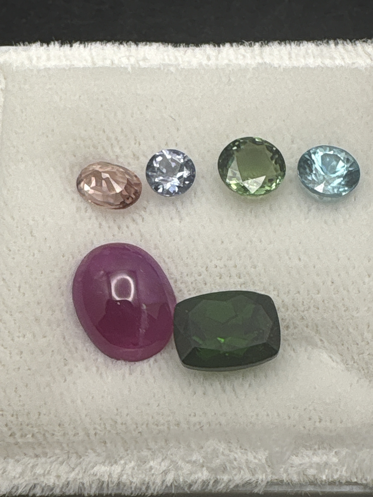

The Gem Drawer › No. 120

Six assorted loose stones from a working desk: ovals, rounds, a cabochon, a cushion.
| Catalogue no. | #120 |
|---|---|
| As labeled | UNIDENTIFIED MIXED LOT - 6 loose stones, multiple colors/cuts, no per-stone ID available - see notes |
| Shape / cut | Mixed (oval, round, cabochon, cushion) |
| Weight | Not recorded |
| Measurements | Not recorded |
| Colour | Mixed - see notes for general color impressions |
| Clarity / condition | Not recorded |
Interested in this stone, or in the collection as a whole? Terry VanWormer can answer questions about it.
Click here to inquireor email Terry directly at maxrebo34@gmail.com